Tracking User Stories through Sprint Cycle
Purpose
This tutorial walks through using Trello during your Sprint Cycle.
What is a Sprint Cycle
A sprint cycle is an incremental two to four week period where a Scrum team works toward a potentially shippable product. The teams works through all the tasks required to meet the user story's acceptance criteria. When all tasks are completed it is reviewed by the team and tested before accepting as done.
Step-By-Step Instructions
Pulling Tasks
-
Reminder: Pulling a task means each team member chooses a task from the Sprint Backlog to complete.
- Review Current Sprint Backlog and the tasks for each user story
- Choose one to two tasks to start working on from the Sprint's user stories 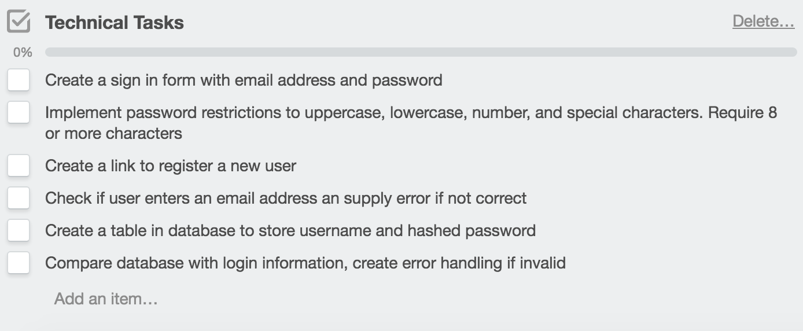
- Once you have chosen a task(s), make sure the user story is selected
- On the right-hand side under the sub memnu Add, select Members 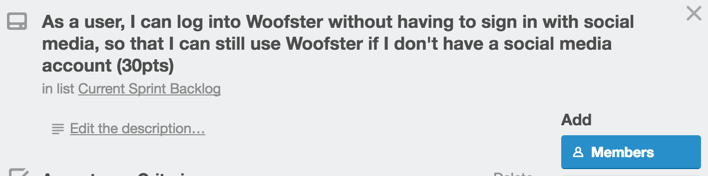
- Select your username 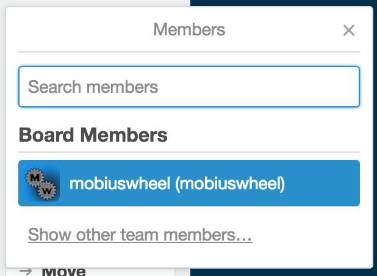
- Press the x to the right of Members pop-up to close out the box
- You should now see your icon under the user story 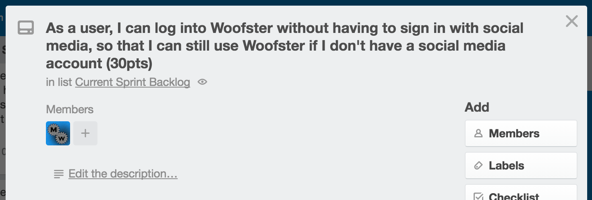
Note: Do not put a checkmark next to the task. This is done when the task is complete. We are just looking at what we want to work on.
Note: This is used to show others that you are working on a task in the user story.
Documenting what you are working on and moving a user story to In Progress
-
Note: Since tasks can be pulled from any team member, it is helpful to document what task you are working on.
- While in the user story scroll to the bottom under Add Comment
- Type Working on and type the task(s) you want to work on.
- Click Send to save 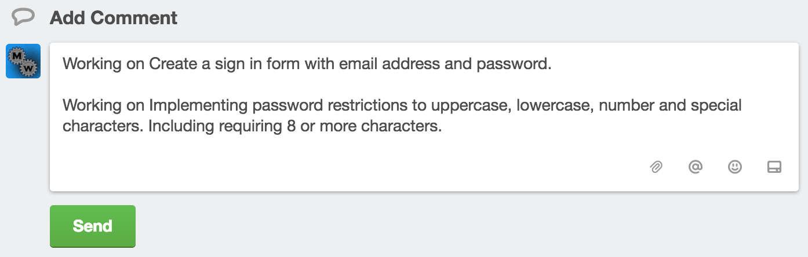
- Next move the user story working on from Current Spring Backlog list to In Progress list 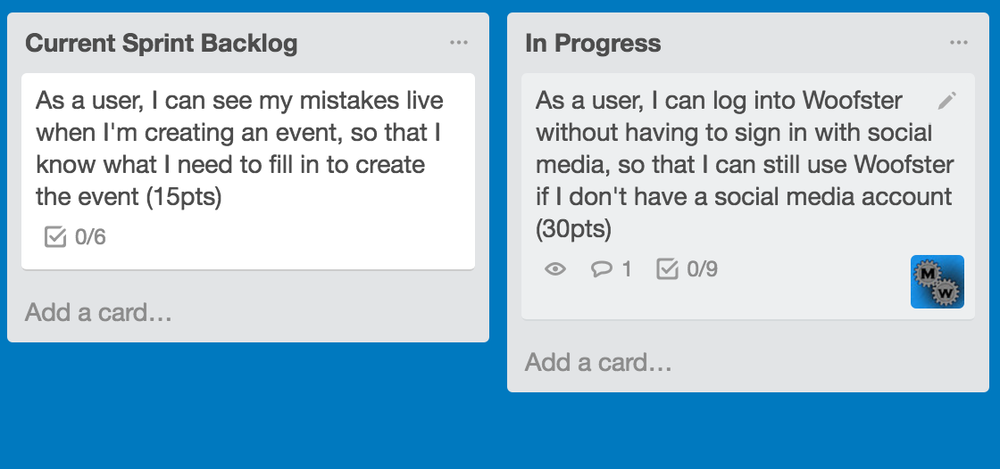
Note: Now other team members know what tasks are remaining to finish a user story.
Completing a Task
-
Note: When a task is complete make sure to check documentation and push the latest version of your code to repository.
- Click on the user story that contains the completed task
- Put a checkmark for the task completed 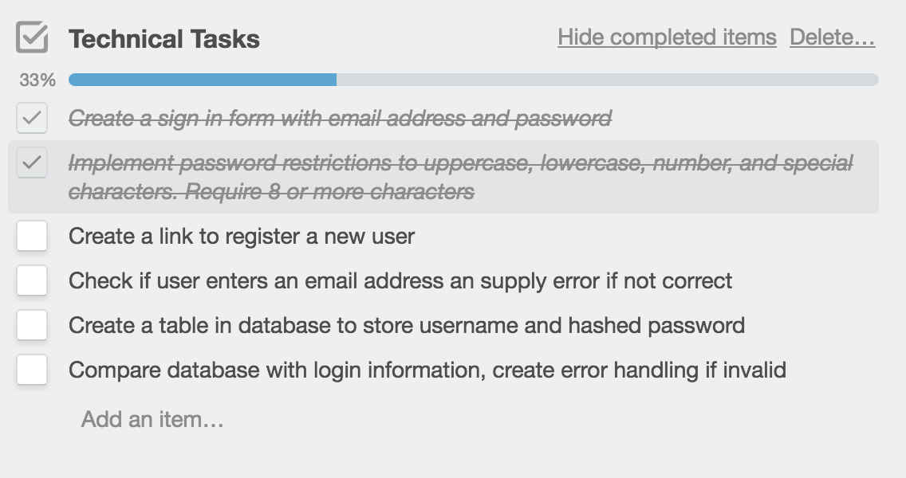
- Check if additional tasks needed to complete and repeat Pulling Tasks 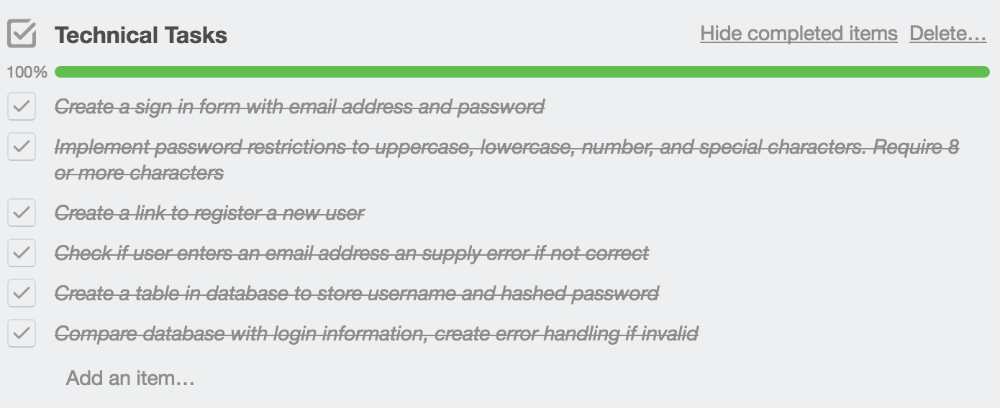
Note: The Activity section of user story documents which team member completed the task
All Tasks Completed on a User Story
-
Note: Once all tasks are complete the team will review documentation, code, and tests.
- Create a new checklist called Confirmed Review
- Click Add Item for Confirmed Review 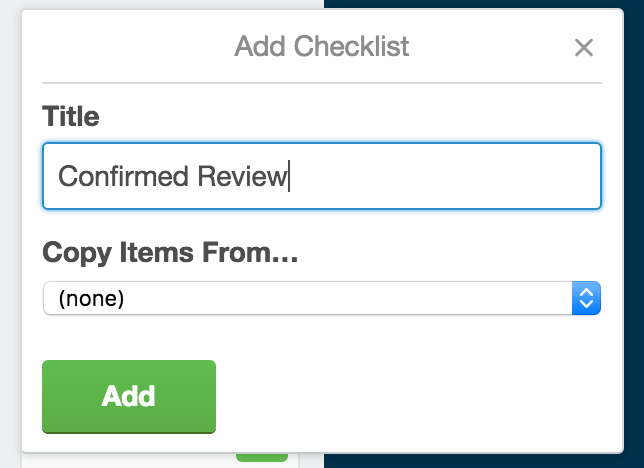
- Add all of your team member names 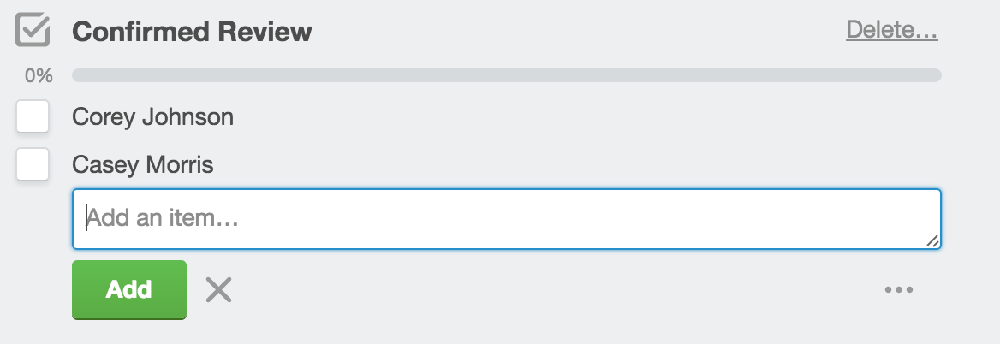
- Move user story from In Progress to Review 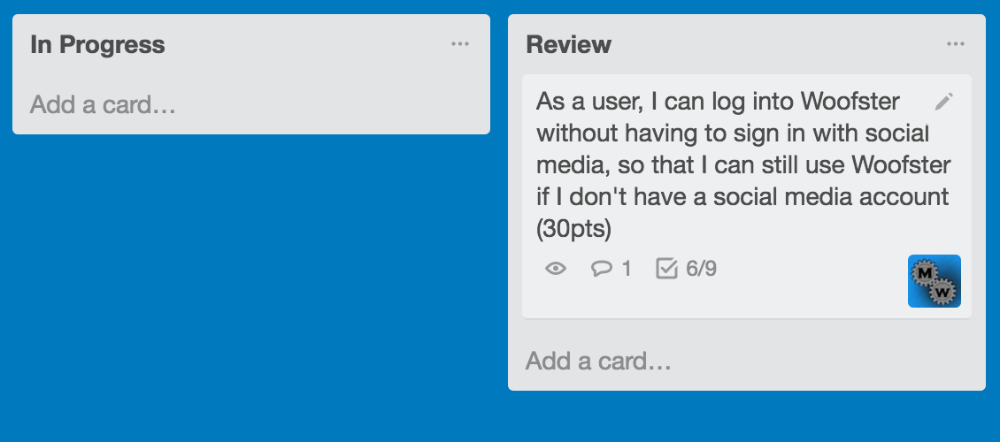
- Go through your review process to confirm Acceptance Criteria and Definition of Done met
- Open user story once review completed
- Put a checkmark next to the criteria met. 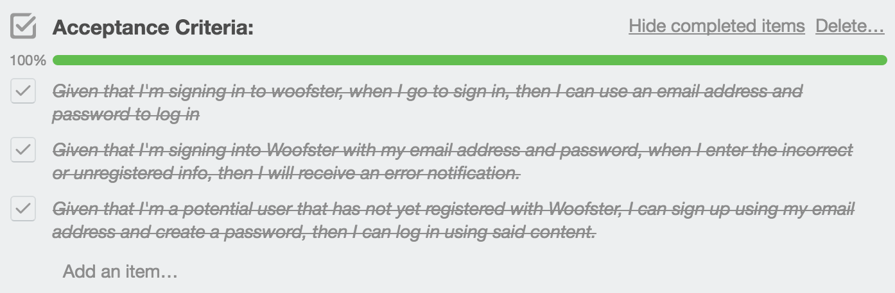
- Once all Acceptance Criteria met, then each member puts a checkmark next to their name 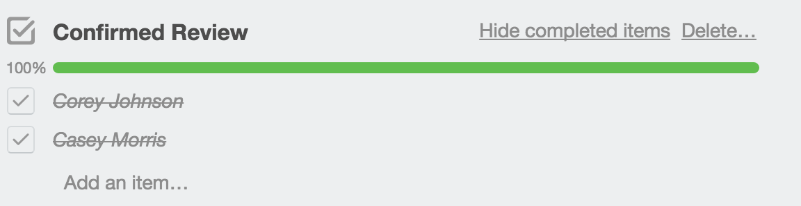
- Move user story from Review to Done 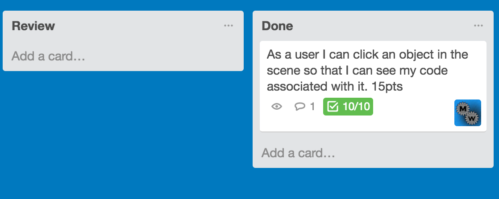
Note: This is so all team members are accountable in reviewing the tasks and code
Note: The review process is made up of testing implemented code, reviewing definition of done, and make sure acceptance criteria met for the user story.
Note: If any Acceptance Criteria is not met then write a comment why, add additional required tasks and move card back to Current Sprint Backlog